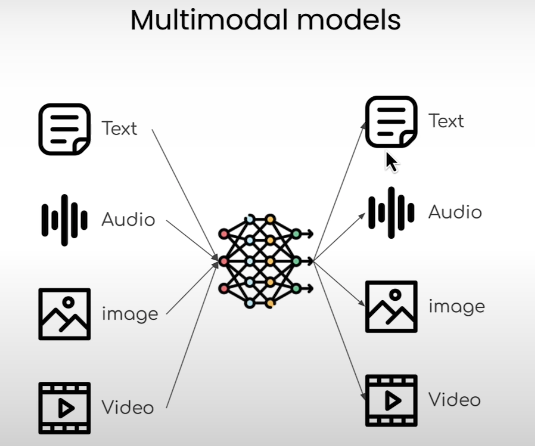
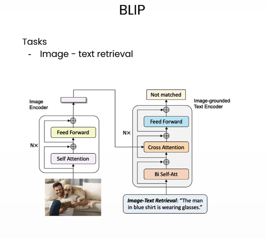

Multimodal models are AI systems that accept and relate more than one type of data — such as images and text, or audio and text — within a single model. They power tasks like image captioning, visual Q&A, and zero-shot image classification.
A model is multimodal when it takes more than one type of input and can reason across them jointly. The important shift is architectural: modalities are no longer handled as separate silos.

Older vision systems were usually one-model-per-task: a classifier for classification, a captioning model for captioning, a detector for detection. The newer pattern is:
This shift reduces per-task data collection and lets one model transfer knowledge across tasks. Modern multimodal systems are usually foundation models: pretrain once on large image-text or audio-text corpora, then adapt the same model to many downstream tasks.
CLIP-style models learn a shared embedding space for images and text via contrastive loss:
This makes zero-shot classification possible: embed candidate text labels like "a photo of a golden retriever" and choose whichever text is closest to the image embedding.
Learning Transferable Visual Models From Natural Language Supervision (CLIP) — the paper that made zero-shot vision-language transfer mainstream.
| Task | Description |
|---|---|
| Image captioning | Generate a natural language description of an image |
| Image-text matching (ITM) | Score how well an image and text description match |
| Visual Q&A | Answer a question about an image |
| Zero-shot image classification | Classify an image using text labels, no task-specific training |
| Zero-shot audio classification | Classify audio using text labels (see audio-processing) |
Salesforce's BLIP models handle multiple image-language tasks:
Salesforce/blip-itm-base-coco — scores image-sentence alignment; used for image retrievalSalesforce/blip-image-captioning-base — generates natural language descriptionsBLIP: Bootstrapping Language-Image Pre-training
laion/clap-htsat-unfusedCLAP: Learning Audio Concepts from Natural Language Supervision

The contrastive pretraining approach used in both CLIP (vision-language) and CLAP (audio-language):
At inference time, you can compare any image/audio against any text description — no fine-tuning required. See self-supervised-learning for SimCLR and InfoNCE loss mechanics.
From raw captioning, richer representations emerged:
A strong multimodal system does not have to be a single monolithic network. In practice, you can chain:
Multimodal models inherit the same core problem as language models: they can generate plausible statements not fully supported by the image.
Grounding, pointing, verification models, and specialist sub-models reduce this, but do not eliminate it.